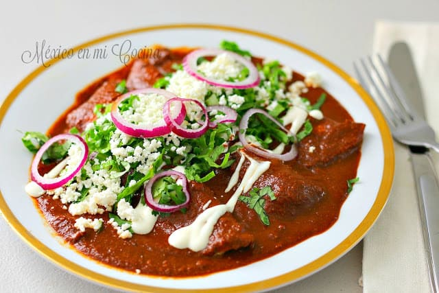

|

|
INGREDIENTES
1 pza. Pechuga de pollo
8 pzas. Tortilla de maiz
1 pza. Cebolla morada
2 pzas. Diente de ajo
3 pzas. Rama de cilantro
100 gr. Queso cotija o fresco
2 tazas Mole oaxaqueño (ver receta
2 oz. Aceite de olivo
1 1/2 lt. Agua caliente
Sal de mar y pimienta recién molida
|